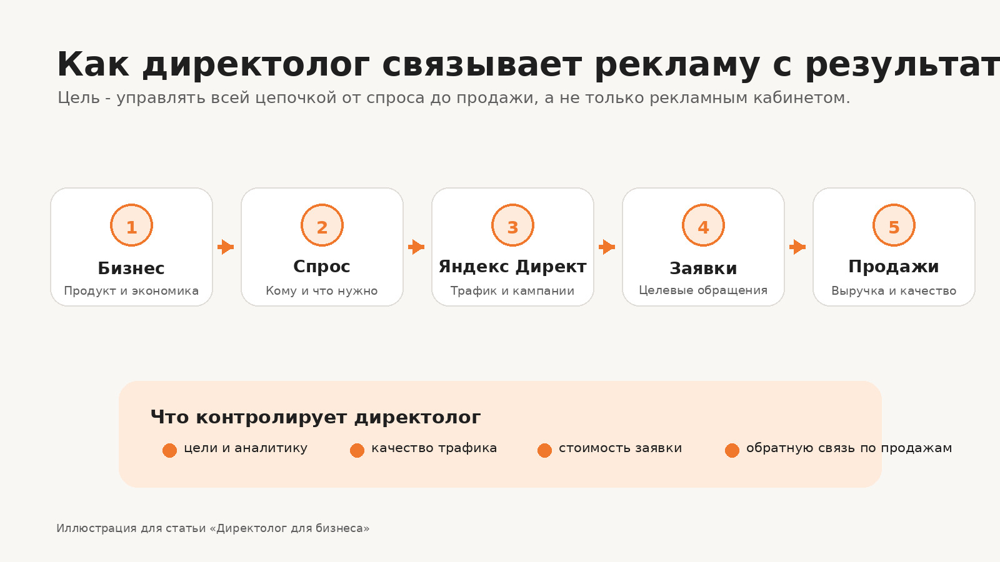
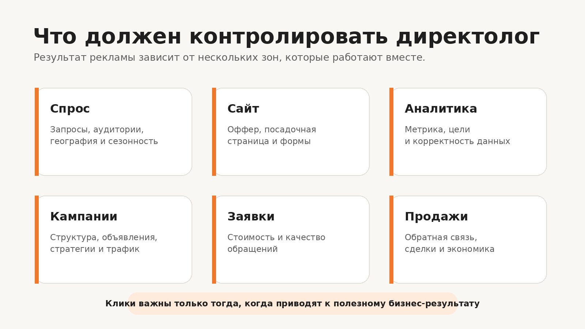

Блог о платном трафике
Директолог для бизнеса: когда нужен специалист по Яндекс Директу
Директолог для бизнеса нужен не ради самой настройки рекламного кабинета. Его задача - связать рекламу с реальными целями компании: заявками, продажами, выручкой и допустимой стоимостью привлечения клиента.
Яндекс Директ дает бизнесу доступ к поисковому спросу, рекламной сети и другим площадкам Яндекса. Но результат зависит не только от объявлений. На него одновременно влияют предложение, сайт, аналитика, рекламные настройки, качество трафика и работа отдела продаж.
Поэтому нормальная работа директолога начинается не с кнопки «Создать кампанию», а с вопроса: что бизнес продает, кому, за счет чего зарабатывает и какую стоимость привлечения клиента может себе позволить.
Что делает директолог для бизнеса
Директолог - специалист по контекстной рекламе в Яндекс Директе. На официальной странице подбора специалистов Яндекс отдельно относит к типовым задачам настройку рекламных кампаний, их ведение, аудит и работу с Яндекс Метрикой.
Для бизнеса это обычно выглядит так:
- анализируется продукт, спрос, география и конкуренты;
- проверяется сайт или другая посадочная страница;
- определяется, какие действия считать полезными конверсиями;
- настраивается Яндекс Метрика и передача нужных целей;
- формируется структура рекламных кампаний;
- создаются объявления и рекламные материалы;
- подбираются аудитории, запросы и ограничения;
- запускаются тесты;
- анализируются поисковые запросы, площадки, объявления и сегменты;
- неэффективные связки ограничиваются, рабочие получают больше бюджета;
- результат сопоставляется с качеством заявок и продажами.
Если нужно сначала понять базовую механику площадки, у меня есть отдельный материал как работает Яндекс Директ.
Сам рекламный кабинет - только часть работы. Хороший результат часто упирается в то, что происходит до клика и после него.

Какие задачи бизнеса может решать директолог
Чаще всего специалист подключается в одной из четырех ситуаций.
Нужно получить новый поток заявок
У бизнеса есть товар или услуга, на которые уже существует спрос, но нет стабильного канала привлечения клиентов. В этом случае Яндекс Директ можно использовать как источник платного трафика и постепенно оценивать реальную стоимость обращения и продажи.
Реклама уже работает, но результат нестабилен
Кампании могут приносить заявки, но их стоимость скачет, часть трафика оказывается нецелевой, а бюджет расходуется без понятной связи с продажами.
В такой ситуации директологу нужно не обязательно пересобирать все с нуля. Сначала полезнее проверить текущие кампании, аналитику, цели, поисковые запросы, площадки, структуру и качество обращений.
Бизнес хочет масштабировать работающую рекламу
Если уже найдены связки, которые дают приемлемый результат, задача меняется. Нужно понять, где можно увеличить объем без резкого ухудшения экономики: расширить географию, аудитории, семантику, форматы или бюджет.
Масштабирование без контроля качества заявок опасно. Количество лидов может вырасти, а число продаж почти не измениться.
В компании нет отдельной компетенции по Яндекс Директу
Владельцу бизнеса или маркетологу не всегда есть смысл самостоятельно следить за изменениями интерфейса, стратегиями, отчетами, поисковыми запросами и технической аналитикой. Директолога подключают как профильного исполнителя, который отвечает за этот канал и объясняет решения на языке бизнес-показателей.
Когда Яндекс Директ имеет смысл для бизнеса
Директ особенно логично тестировать, когда потенциальные клиенты уже ищут товар или услугу либо алгоритмы могут находить подходящую аудиторию по накопленным сигналам.
Перед запуском я бы проверил пять вещей:
- Есть ли понятный продукт и предложение.
- Есть ли посадочная страница, на которой можно выполнить нужное действие.
- Настроена ли аналитика.
- Понимает ли бизнес, что считать целевой заявкой или продажей.
- Есть ли экономика, по которой можно определить допустимую стоимость привлечения клиента.
Для локальных компаний отдельный вопрос - нужен ли полноценный Яндекс Директ или задачу лучше решает продвижение карточки организации. Эту разницу я разбирал в статье «Чем отличается Яндекс Бизнес от Яндекс Директа».
До запуска полезно хотя бы приблизительно оценить емкость поискового спроса и стоимость трафика. Для этого можно использовать прогноз бюджета Яндекс Директа, а затем перевести прогноз кликов в предполагаемые заявки и продажи через собственную конверсию сайта и экономику бизнеса.
Когда директолог не решит проблему
Реклама не может компенсировать любую проблему компании.
Директолог не сможет гарантированно сделать канал прибыльным, если:
- продукт не нужен рынку;
- предложение заметно проигрывает конкурентам;
- на сайте непонятно, что продается и почему стоит оставить заявку;
- заявки обрабатываются слишком долго или теряются;
- компания не передает информацию о качестве лидов;
- результат оценивается только по кликам и CTR;
- тест останавливается после первых расходов, когда данных еще недостаточно для нормального вывода.
Иногда самая полезная рекомендация до запуска рекламы - сначала исправить посадочную страницу, оффер или аналитику. Иначе рекламный бюджет просто быстрее приведет больше людей в слабую воронку.
Как строится работа директолога с бизнесом
У разных специалистов процесс может отличаться, но логика обычно должна идти от экономики к трафику, а не наоборот.
1. Определяем цель и бизнес-показатели
До настройки кампаний нужно зафиксировать, что считается результатом. Для услуги это может быть квалифицированная заявка или продажа. Для интернет-магазина - заказ, оплаченная покупка, выручка или ДРР.
Чем ближе оптимизация к реальному бизнес-результату, тем полезнее данные.
2. Проверяем спрос и ограничения
Смотрим географию, сезонность, поисковые запросы, конкурентов, возможную стоимость трафика и объем теста.
На этом этапе не нужно обещать точное количество заявок. До запуска неизвестна реальная конверсия конкретного сочетания аудитории, предложения, объявления и сайта.
3. Готовим аналитику
Яндекс Метрика позволяет отслеживать важные действия пользователей и использовать цели в рекламных стратегиях. В официальной документации Яндекса прямо указано, что данные Метрики применяются для оценки эффективности и настройки автоматических стратегий.
Поэтому до запуска должны корректно фиксироваться хотя бы основные действия: отправка формы, звонок, заказ, покупка или другое действительно полезное для бизнеса событие.
4. Запускаем кампании и собираем фактические данные
После запуска появляются реальные цифры: стоимость клика, конверсия сайта, стоимость заявки, качество обращений.
Современный Яндекс Директ сильно опирается на автоматизацию, поэтому задача специалиста не сводится к ручному назначению ставок. Нужно правильно задать цели и ограничения, следить за тем, какой трафик находят алгоритмы, и регулярно чистить неэффективные сегменты.
Техническую часть первого запуска я отдельно описал в инструкции как настроить рекламу в Яндекс Директ.
5. Связываем рекламу с продажами
Заявка сама по себе еще не означает, что реклама работает хорошо.
Если один источник дает 30 дешевых обращений без продаж, а другой - 10 более дорогих заявок, из которых половина становится клиентами, второй источник может быть выгоднее.
Поэтому директологу нужна обратная связь от бизнеса: какие заявки целевые, какие дошли до сделки, где был отказ и почему.

По каким показателям оценивать работу
Для владельца бизнеса я бы разделил показатели на два уровня.
Первый уровень - рекламная диагностика:
- показы;
- клики;
- CTR;
- CPC;
- конверсия сайта;
- стоимость целевого действия.
Эти показатели помогают понять, что происходит внутри рекламной системы и на посадочной странице.
Второй уровень - бизнес-результат:
- количество целевых заявок;
- стоимость квалифицированного лида;
- продажи;
- стоимость продажи;
- выручка;
- ДРР или ROMI, если бизнес может корректно их посчитать.
Оценивать директолога только по CTR или цене клика неправильно. Дешевый трафик не имеет ценности, если он не превращается в обращения и продажи.
Что бизнес должен предоставить специалисту
Чем лучше исходные данные, тем меньше работа строится на догадках.
На старте полезны:
- описание продукта и основных направлений;
- география продаж;
- приоритетные услуги или категории;
- средний чек;
- маржинальность или хотя бы допустимая стоимость продажи;
- статистика прошлых рекламных кампаний;
- данные по продажам и качеству лидов;
- доступ к Яндекс Директу и Метрике;
- информация о сезонности;
- особенности работы отдела продаж.
Если часть этих данных отсутствует, запуск все равно возможен. Но сначала придется получить базовую статистику тестом, а выводы будут менее точными.
Как выбрать директолога для своего бизнеса
При выборе я бы смотрел не на количество профессиональных терминов в разговоре, а на то, какие вопросы задает специалист и как объясняет свои решения.
Хороший признак, если директолог:
- спрашивает про экономику бизнеса, а не только про рекламный бюджет;
- интересуется сайтом и обработкой заявок;
- показывает кейсы с понятными исходными данными и результатом;
- не обещает заранее точную стоимость заявки без статистики;
- может объяснить, почему меняет настройки;
- оценивает качество обращений, а не только количество конверсий;
- работает с аналитикой, а не ограничивается рекламным кабинетом.
Подробнее - в статье «Как выбрать директолога».
Если выбираете между частным специалистом и командой, логика уже немного другая: важны объем задач, количество каналов, необходимость постоянной доступности и глубина личного погружения.
Сравнение форматов - в статье «Директолог или агентство».
Мой подход к работе с рекламой бизнеса
Я работаю с платным трафиком больше 10 лет и веду проекты напрямую как специалист. До запуска смотрю не только рекламный кабинет, но и продукт, оффер, посадочную страницу, аналитику и точки, где компания может терять обращения.
Для меня задача Яндекс Директа - не получить максимум кликов, а собрать управляемую систему, где понятно:
- откуда пришел пользователь;
- какое действие он совершил;
- сколько стоило обращение;
- какого качества была заявка;
- что произошло дальше в продажах;
- какие рекламные связки стоит отключить, доработать или масштабировать.
Кейсы и описание формата работы собраны на основной странице сайта.
Частые вопросы
Директолог нужен только крупному бизнесу?
Нет. Сам размер компании не определяет необходимость специалиста. Важнее наличие рекламной задачи, спроса, бюджета для теста и возможности измерять результат.
Можно ли настроить Яндекс Директ самостоятельно?
Да. Для простого проекта это вполне реально. Но бизнесу придется самостоятельно разбираться в аналитике, стратегиях, качестве трафика и регулярной оптимизации. Если стоимость ошибки выше стоимости работы специалиста, передачу канала директологу обычно проще обосновать экономически.
Директолог отвечает за продажи?
Он напрямую отвечает за свою часть воронки: качество рекламной настройки, трафика, аналитики и оптимизации. Но итоговые продажи зависят также от продукта, цены, сайта, отдела продаж, наличия товара и других факторов, которые специалист по рекламе не контролирует полностью.
Что лучше оценивать: количество заявок или их стоимость?
Оба показателя нужны, но их недостаточно без качества. Основной ориентир - сколько бизнес получает целевых обращений и продаж по приемлемой для своей экономики цене.
Итог
Директолог для бизнеса полезен тогда, когда реклама рассматривается как управляемый канал привлечения клиентов, а не как разовая настройка объявлений.
Нормальная работа строится по цепочке: экономика бизнеса -> спрос -> сайт и аналитика -> рекламные кампании -> заявки -> продажи -> оптимизация.
Если эта цепочка измеряется, специалист может принимать решения по данным и постепенно улучшать результат. Если бизнес смотрит только на клики и расходы в кабинете, даже технически аккуратно настроенный Яндекс Директ остается почти непрозрачным.